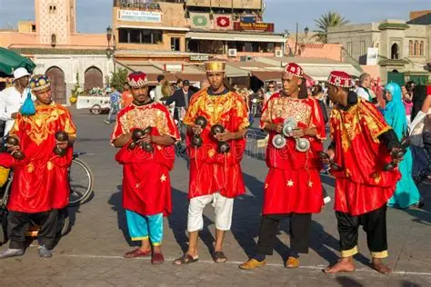
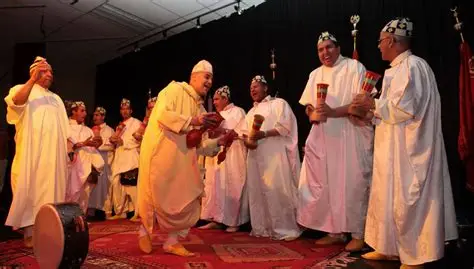
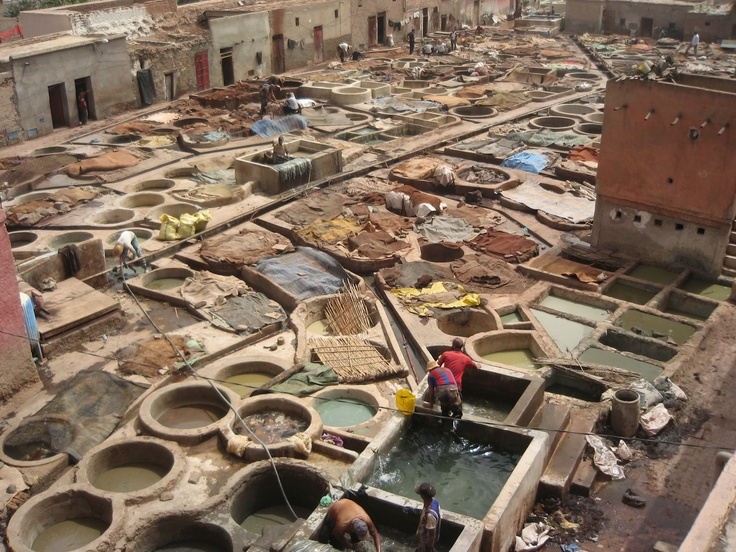
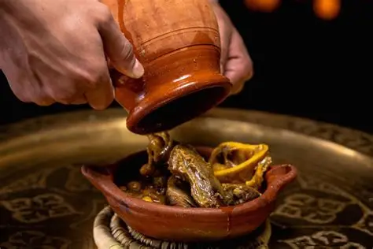
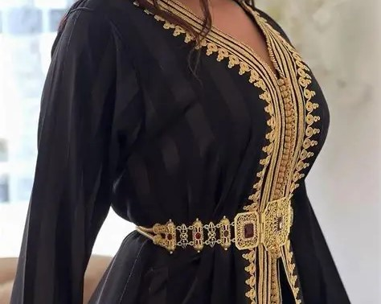
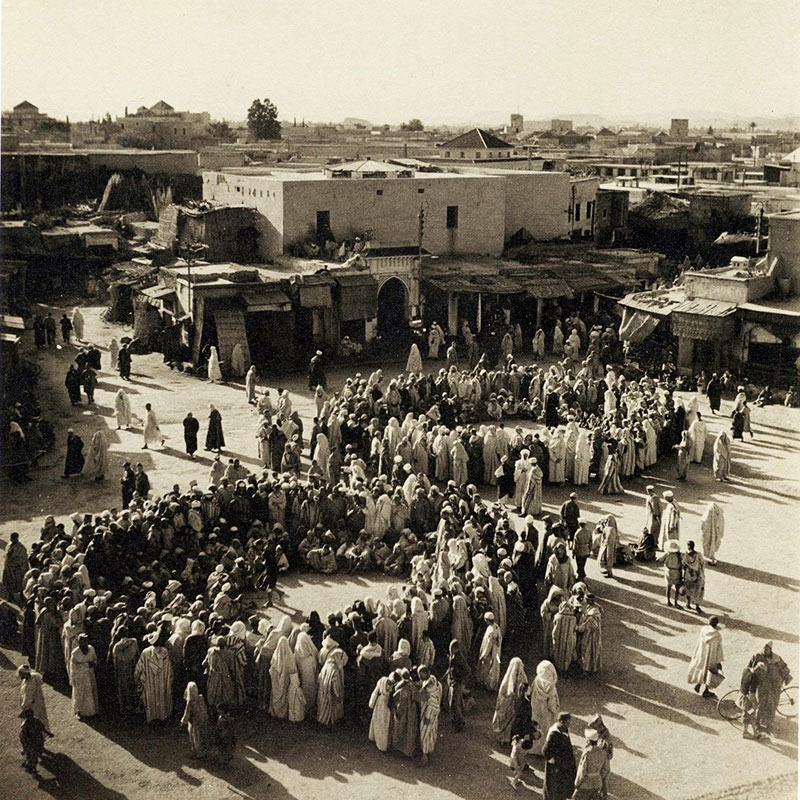

Music, art, and ancient customs that breathe life into the Red City every day.
Marrakech is not only a city of stones and monuments — it is a city of sound, colour, and living tradition. From the hypnotic rhythms of Gnawa music to the vibrant chaos of Jemaa el-Fna square, from ancient craft guilds to modern football clubs, the Red City pulses with a cultural energy unlike anywhere else on earth.

A UNESCO-listed spiritual music rooted in sub-Saharan Africa, Gnawa combines hypnotic rhythms, call-and-response chanting, and trance ceremonies. The annual Gnawa World Music Festival in Essaouira draws artists and fans from across the globe.

A uniquely Marrakchi percussion tradition performed by large groups of musicians playing tbel drums and qaraqeb castanets. Performed during festivals, weddings, and Ramadan, Dakka was inscribed on UNESCO's intangible cultural heritage list in 2005.

The souks of Marrakech are home to master craftsmen practising centuries-old trades: zellige tile-making, leather tanning in the famous tanneries, hand-woven carpets, brass lanterns, and intricate woodcarving. Each craft is a living art form passed from master to apprentice.

Marrakech is a city of extraordinary flavours. From slow-cooked lamb tagine with preserved lemons to pastilla — a sweet and savoury pigeon pie dusted with sugar — and the famous mint tea ceremony, food here is an act of hospitality and culture.

The djellaba, kaftan, and babouche slippers are not museum pieces here — they are everyday wear. Marrakech blends Berber, Arab, and Andalusian influences in its textiles, with hand-embroidered garments worn proudly at celebrations and religious festivals.

For centuries, Jemaa el-Fna square has been home to the halqa — circles of storytellers, poets, and musicians who captivate audiences with tales of heroes, saints, and adventures. This living oral tradition is recognised by UNESCO as an intangible world heritage.
Gnawa music is one of Morocco's most powerful and spiritual art forms. Brought to North Africa by enslaved West Africans centuries ago, it evolved into a unique tradition that blends Islamic mysticism with ancient African healing rituals. The music is performed during lila ceremonies — all-night spiritual gatherings aimed at healing and connecting with ancestral spirits.
In Marrakech, Gnawa masters known as Maalem lead these ceremonies, playing the three-stringed guembri bass lute while their group responds with iron castanets called qaraqeb. The music is inseparable from colour, costume, and trance — a full sensory experience of faith and culture.
Football is culture too — and in Marrakech, no club embodies the spirit of the city more than Club Kawkab Marrakech, known to fans simply as KACM.
Founded on 20 September 1947 by Hadj Idriss Talbi, Kawkab Athletic Club of Marrakesh (KACM) is one of Morocco's most historic football clubs. The club was founded during a period of growing nationalist sentiment, symbolising local pride and athletic ambition in the pre-independence era.
The club's traditional colours are red and white, and its crest features a star — derived from "Kawkab," the Arabic word for "star" or "planet." KACM has been a significant institution in Moroccan sporting culture for over 75 years, competing at the highest levels of Moroccan football.
The club remains an important part of the sporting and cultural life of Marrakech, representing the city with pride on the national stage.
⭐ Did you know? KACM was founded by Hadj Idriss Talbi during a period of growing Moroccan nationalism — making it a symbol of local pride even before independence.
Beyond music and sport, Marrakech is kept alive by daily rituals and traditions that have endured for centuries.
Offering mint tea — poured from a height to create foam — is the cornerstone of Moroccan hospitality. To refuse is considered impolite; to accept is to enter a bond of friendship and trust.
During Ramadan, the city transforms at sunset. The call to Maghrib prayer silences the streets momentarily before families break their fast with harira soup, chebakia pastries, and dates. Jemaa el-Fna fills with music and life throughout the night.
A traditional equestrian performance where riders in colourful costumes charge in formation and fire muskets simultaneously in the air. Recognised by UNESCO, Tbourida is performed at moussems (festivals) across Morocco.
The great square at the heart of Marrakech is a UNESCO masterpiece of oral and intangible heritage — a different world at every hour of the day.
A tradition stretching back centuries, drawing curious crowds from around the world.
The Halqa tradition — circles of storytellers keeping oral history alive.
Gnawa, Berber, and Andalusian musicians fill the square with sound every evening.
At night, the square transforms into a giant open-air restaurant of Moroccan cuisine.
Get in touch with us and start planning your journey to the Red City.
Contact Us →